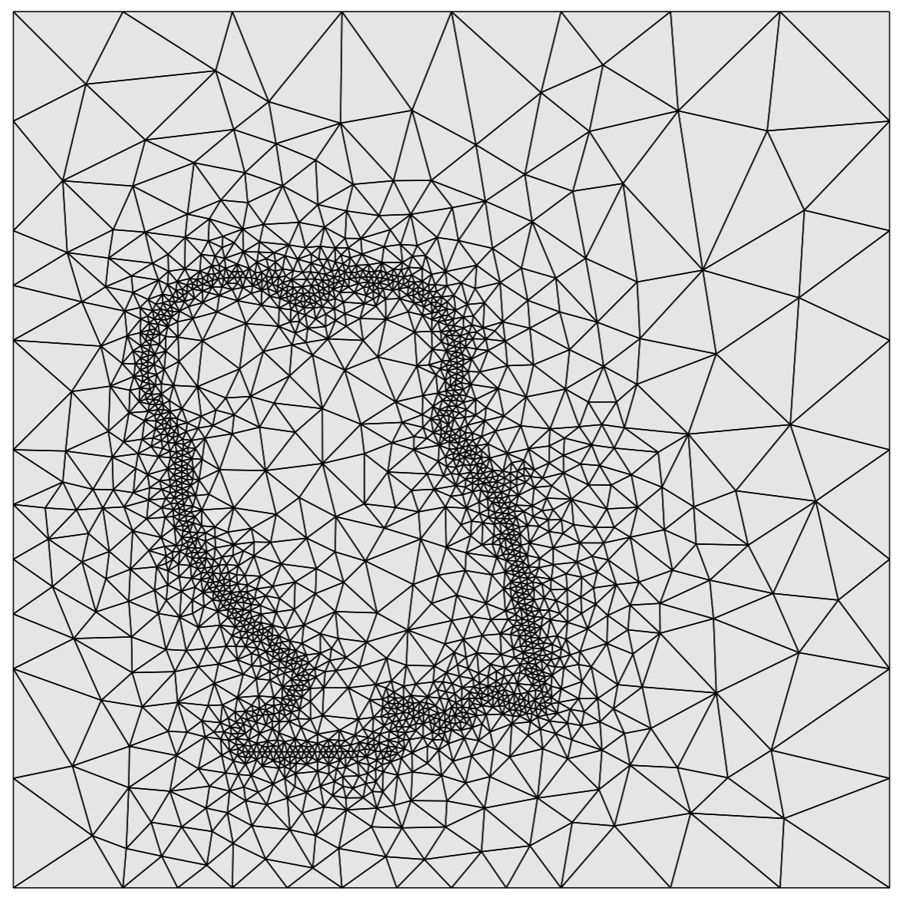
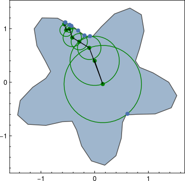

Problem
Meshing is hard

Consider a simple problem with Dirichlet boundary conditions, i.e. a boundary-value problem
$$\Delta u(x)=0,\quad u(x)\big|_{\partial\Omega}=h(x),$$
where (for mathematicians) $\Delta \equiv \partial^2_{j}$.
Walk-on-spheres
Running a random-walk for each
In other words, the algorithm substitutes the Wiener process with the grow-and-sample method, which reduces computational time, and can set fixed bounds on the iterations (which makes it easier to paralellize). Instead of hoping to sample the boundary within a time $t$, one just sets a large N_iter and hopes for the best! A graphical description of the algorithm is shown below

One can see that the algorithm builds the solution from the outside towards the inside, as the points near the boundary converge faster to the solution.

It is quite suprising how fast the solver gets a feeling for the solution’s characteristics. The rest of the iterations just smoothen things out a bit, but the ‘orange-wedges’ pattern appears as earlt as the 34th iteration!
Further reading
This algorithm came back to use for computer graphics, and a new, improved version was named Walk on Stars. This has all the advantages that I described above, mainly that it is mesh-free, but it can handle Neumann boundary conditions too.